Chủ tịch Hồ Chí Minh, tên khai sinh là Nguyễn Sinh Cung, sinh ngày 19/5/1890 tại làng Hoàng Trù, xã Kim Liên, huyện Nam Đàn, tỉnh Nghệ An. Người sinh ra trong một gia đình nhà Nho có truyền thống yêu nước.
Chứng kiến cảnh đất nước mất độc lập, nhân dân chịu nhiều áp bức, Người sớm hình thành lòng yêu nước và quyết tâm tìm con đường giải phóng dân tộc.
Ngày 5/6/1911, với tên gọi Văn Ba, Nguyễn Tất Thành rời Bến Nhà Rồng, bắt đầu hành trình tìm đường cứu nước. Sau nhiều năm hoạt động ở nước ngoài, Người tiếp cận chủ nghĩa Mác – Lênin, tìm ra con đường giải phóng dân tộc phù hợp với thực tiễn Việt Nam.
Người có vai trò quan trọng trong việc thành lập Đảng Cộng sản Việt Nam năm 1930, lãnh đạo cách mạng Việt Nam giành thắng lợi và khai sinh nước Việt Nam Dân chủ Cộng hòa năm 1945.
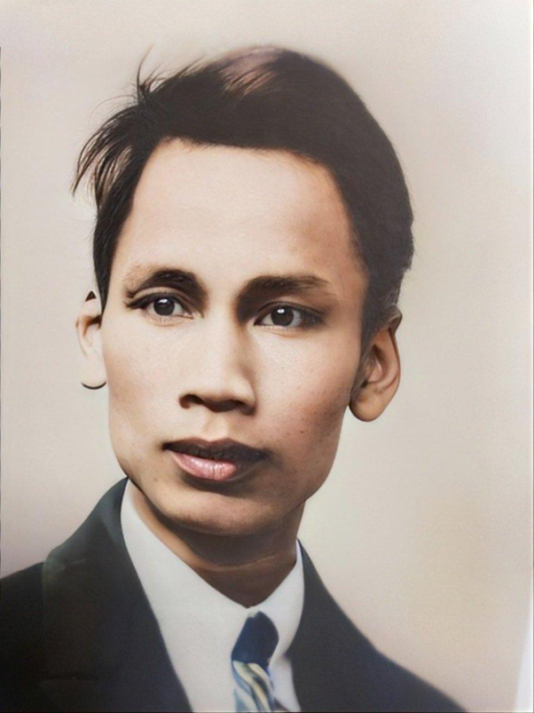
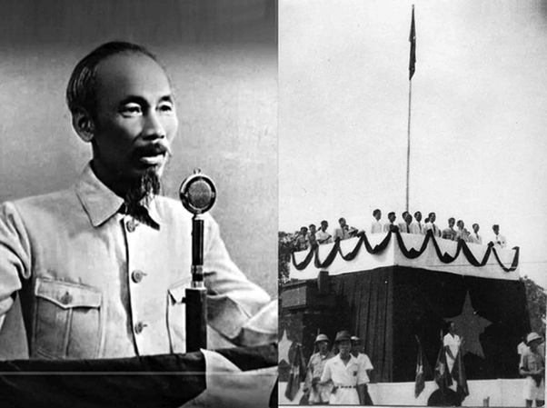
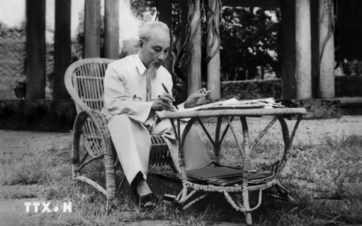
Bác sinh ra và lớn lên tại Nghệ An, trong một gia đình có truyền thống hiếu học, yêu nước. Người sớm chứng kiến cảnh nhân dân mất tự do và mong muốn tìm con đường cứu nước.
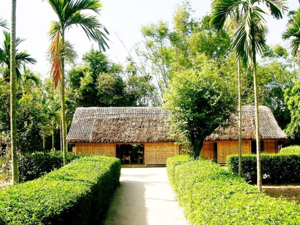
Ngày 5/6/1911, Nguyễn Tất Thành rời Bến Nhà Rồng. Người đi qua nhiều quốc gia, tìm hiểu đời sống xã hội, nghiên cứu các con đường đấu tranh giải phóng dân tộc.
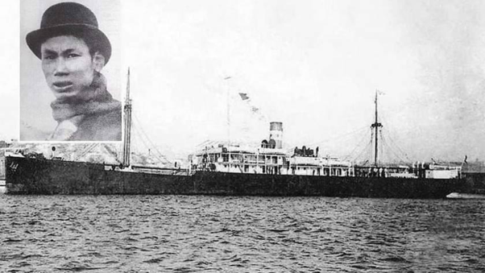
Người tham gia phong trào cộng sản quốc tế, hoạt động báo chí, truyền bá tư tưởng cách mạng và chuẩn bị về chính trị, tư tưởng, tổ chức cho sự ra đời của Đảng Cộng sản Việt Nam.
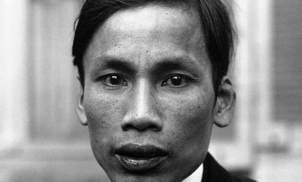
Ngày 3/2/1930, Đảng Cộng sản Việt Nam ra đời. Ngày 28/1/1941, Người trở về nước trực tiếp lãnh đạo cách mạng. Cách mạng tháng Tám năm 1945 thành công rực rỡ.
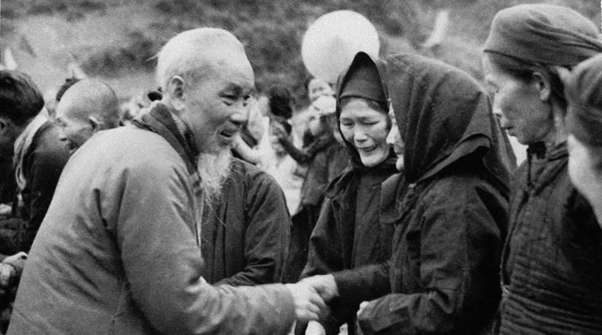
Ngày 2/9/1945, tại Quảng trường Ba Đình, Chủ tịch Hồ Chí Minh đọc Tuyên ngôn Độc lập, khai sinh nước Việt Nam Dân chủ Cộng hòa. Người lãnh đạo toàn dân kháng chiến chống thực dân Pháp.
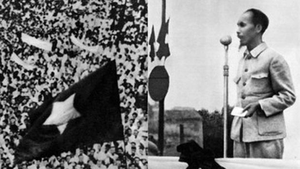
Người lãnh đạo nhân dân xây dựng Chủ nghĩa xã hội ở miền Bắc, đấu tranh giải phóng miền Nam, thống nhất đất nước. Người luôn quan tâm đến đời sống nhân dân và thiếu nhi.
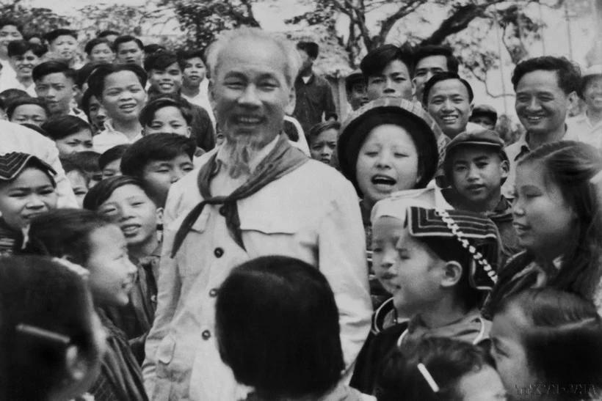
Các tác phẩm kinh điển và di sản văn bản điện tử của Chủ tịch Hồ Chí Minh
Bảo vật quốc gia mang giá trị lịch sử và lý luận vô giá.
Tác phẩm chuẩn bị lý luận cho việc thành lập Đảng.
Tập thơ chữ Hán khắc họa tâm hồn và khí tiết vĩ đại.
Bộ sưu tập toàn bộ các bài viết, bài nói và di sản của Bác.
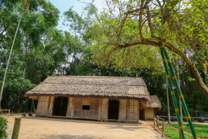
Nơi Bác Hồ sinh ra và gắn liền với những năm tháng đầu đời. Nghệ An là vùng đất giàu truyền thống lịch sử, văn hóa và tinh thần yêu nước kiên cường, nuôi dưỡng nhân cách cao đẹp của Người.
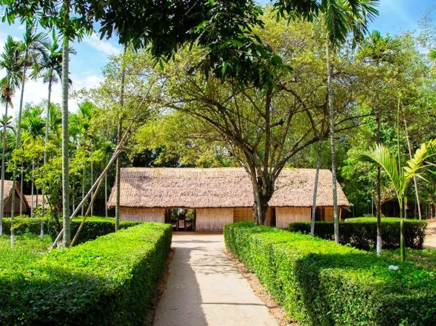
Nơi gắn bó với tuổi thơ, gia đình và những kỷ niệm sâu sắc của Người. Truyền thống hiếu học và lòng yêu quê hương xứ Nghệ đã góp phần hình thành nên tư tưởng cứu nước của Bác.
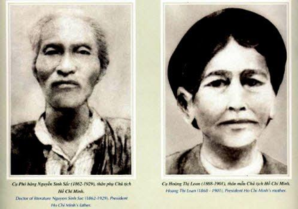
Chân dung Song thân Chủ tịch Hồ Chí Minh: Cụ Nguyễn Sinh Sắc và Cụ Hoàng Thị Loan
(1862–1929) Nhà Nho, từng đỗ Phó bảng năm 1901. Cụ là người giàu lòng yêu nước, thương dân, sống thanh liêm và ảnh hưởng sâu sắc đến trí tuệ, nhân cách của Bác.
(1868–1901) Người phụ nữ Việt Nam điển hình giàu đức hy sinh, cần cù, chịu thương chịu khó, chăm lo nuôi dạy các con trong tình yêu thương ấm áp.
(1884–1954) Người chị cả giàu tinh thần yêu nước, từng tích cực tham gia các phong trào yêu nước chống thực dân Pháp.
(1888–1950) Còn gọi là Nguyễn Tất Đạt, là anh trai Bác. Ông luôn giữ vững tinh thần yêu nước và gắn bó với quê hương gia đình.
(1900–1901) Em trai nhỏ của Bác, qua đời khi còn rất nhỏ do hoàn cảnh khó khăn thời bấy giờ.
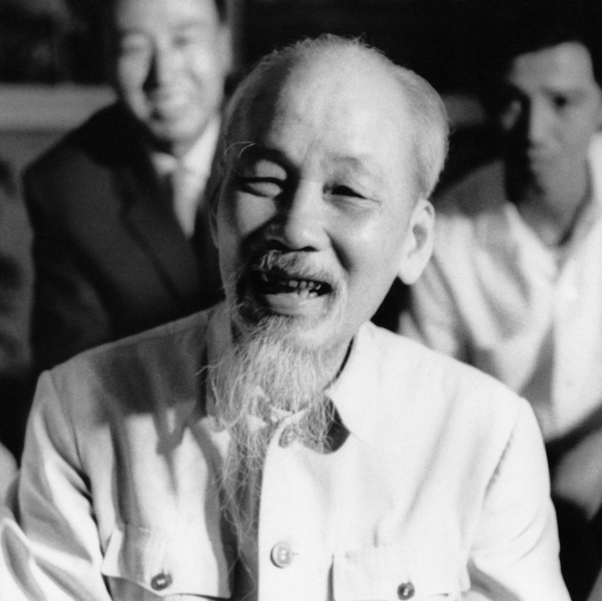
Thông điệp: Học tập phong cách sống giản dị, chân thành và gần gũi của Bác.
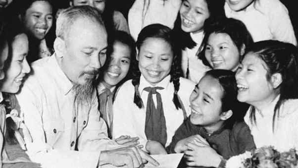
Thông điệp: Tình yêu thương và sự quan tâm sâu sắc dành cho thế hệ măng non.
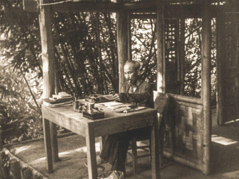
Thông điệp: Tinh thần trách nhiệm, sự tận tụy và lối sống giản dị.
Thông điệp: Giáo dục ý thức bảo vệ môi trường và xây dựng cuộc sống xanh.
Thông điệp: Tình cảm nồng thắm của Bác dành cho các chiến sĩ bảo vệ Tổ quốc.
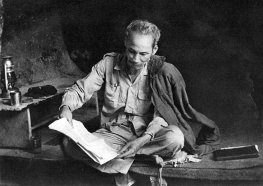
Thông điệp: Tinh thần tự học, học tập suốt đời và không ngừng nâng cao hiểu biết.
Nơi lan tỏa tư tưởng, đạo đức, phong cách Hồ Chí Minh trong đời sống cộng đồng.
Không gian Văn hóa Hồ Chí Minh tại Khu phố 3 là nơi lưu giữ, giới thiệu những hình ảnh, tư liệu và giá trị cao đẹp về cuộc đời, sự nghiệp cách mạng của Chủ tịch Hồ Chí Minh.
Thông qua việc xây dựng và duy trì không gian văn hóa tại địa phương, Khu phố 3 mong muốn tạo nên một địa điểm sinh hoạt, tìm hiểu và giáo dục truyền thống, giúp cán bộ, đoàn viên, hội viên và người dân có thêm cơ hội tiếp cận với tư tưởng, đạo đức, phong cách của Bác.
Không chỉ dừng lại ở việc trưng bày hình ảnh, tư liệu, Không gian Văn hóa Hồ Chí Minh còn hướng đến việc đưa những lời dạy và giá trị nhân văn của Người trở thành những hành động thiết thực trong học tập, lao động, sinh hoạt và xây dựng đời sống văn hóa tại khu dân cư.
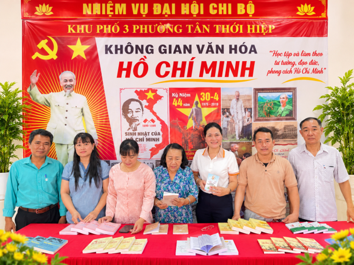
Không gian Văn hóa Hồ Chí Minh tại Khu phố 3
Cùng nhìn lại những hình ảnh – nơi những giá trị lịch sử, văn hóa và tư tưởng của Bác được gìn giữ, lan tỏa trong đời sống cộng đồng.
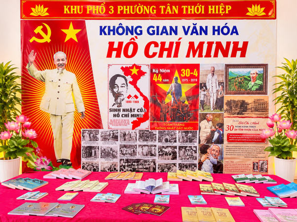
Giới thiệu không gian được xây dựng tại địa phương, thể hiện sự quan tâm trong công tác tuyên truyền, giáo dục truyền thống và học tập, làm theo tư tưởng, đạo đức, phong cách Hồ Chí Minh.
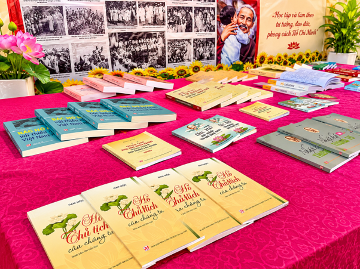
Những hình ảnh, câu chuyện và tư liệu lịch sử giúp người xem hiểu thêm về cuộc đời, sự nghiệp cách mạng cũng như những giá trị tư tưởng mà Chủ tịch Hồ Chí Minh để lại.
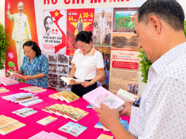
Nơi giới thiệu những tác phẩm, tài liệu và câu chuyện về Bác Hồ, góp phần khơi dậy tinh thần tự học, tìm hiểu lịch sử và nâng cao nhận thức trong cộng đồng.